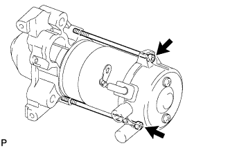
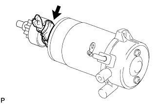
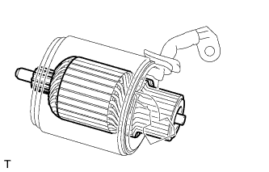
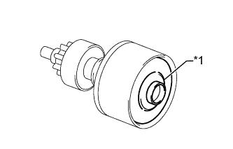

STARTER > DISASSEMBLY |
| 1. REMOVE MAGNET STARTER SWITCH ASSEMBLY |
 |
Remove the nut and disconnect the lead wire from the magnet starter switch.
Remove the 2 nuts and magnet starter switch.
| 2. REMOVE STARTER DRIVE HOUSING ASSEMBLY |
|  |
Using a T30 "TORX" socket wrench, remove the 2 bolts.
Pull out the starter yoke and starter commutator end frame assembly together with the starter armature.
| 3. REMOVE STARTER CENTER BEARING CLUTCH SUB-ASSEMBLY |
|  |
Remove the starter pinion drive lever.
Remove the starter center bearing clutch sub-assembly from the starter yoke.
| 4. REMOVE STARTER COMMUTATOR END FRAME ASSEMBLY |
Remove the 2 screws and starter commutator end frame.
Remove the dust starter protector from the starter commutator end frame.
| 5. REMOVE STARTER ARMATURE ASSEMBLY |
 |
Disconnect the 4 brushes from the starter brush holder.
Using a screwdriver, hold back the brush spring.
Disconnect the brush from the starter brush holder.
Remove the starter brush holder.
|  |
Remove the starter armature from the starter yoke.
| 6. REMOVE STARTER ARMATURE PLATE |
|  |
Remove the starter armature plate from the starter center bearing clutch.
| *1 | Starter Armature Plate |
| 7. REMOVE PLANETARY GEAR |
Remove the 3 planetary gears from the starter center bearing clutch.